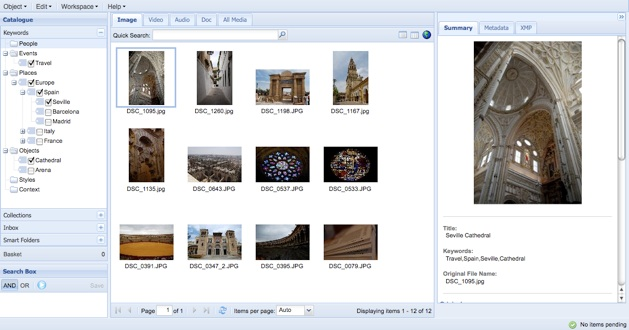
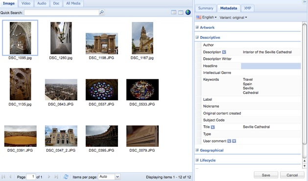
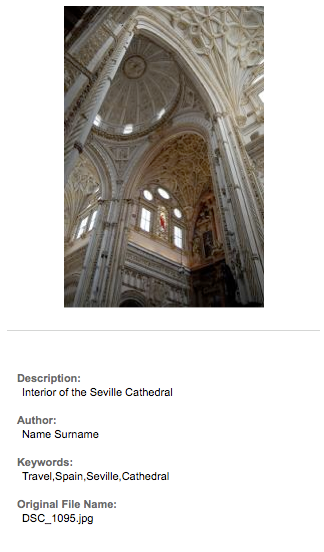
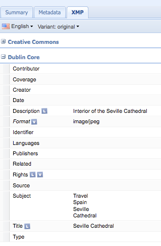
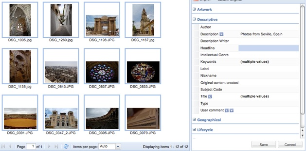

NotreDAM

The open-source Digital Asset Management platform
Metadata
NotreDAM - Open Source Digital Asset Management - developed by CRS4 and Sardegna Ricerche (DistrICT Lab)
NotreDAM supports the set of properties defined by Adobe XMP. When an object is created, any XMP Metadata is read from the resource (if present) and copied to the NotreDAM database.
NotreDAM provides 3 different views of the metadata sets.
The simpler view is the Summary view, showing just a significant subset of metadata of a selected object, together with a preview.

The Metadata view shows a larger set of metadata logically grouped together (Descriptive, Geographical, Lifecycle, Rights, etc..).
If you select more than one objects, it is possible to edit at once a property of all the selected objects.

In the following example, we set the description “Interior of the Seville Cathedral” to the selected image and save the information by clicking Save. These changes are reflected in the Summary view:

The Metadata view is the simplest way of editing your metadata. It automatically maps the information to the XMP schemas in a trasparent way, so you don’t need to know XMP to edit your metadata.
The most complete view is the XMP view, organized according to the properties schemas defined by the XMP Standards. Since the properties of the Metadata view are just a different grouping of a subset of XMP properties, any change made in the Metadata View will be reflected in the XMP view as well.

As we said before, NotreDAM allows you to edit metadata on multiple items. For example, assuming we want to set the description “Photos from Seville, Spain” to all the images we have uploaded before, we have to select all the objects and edit the property field labeled Description:

In case the selected objects have different values for the same property, the value field will show “(multiple values)”.
XMP embedding is not supported yet in the current release and will be added soon.
The following step shows how to search objects in NotreDAM.